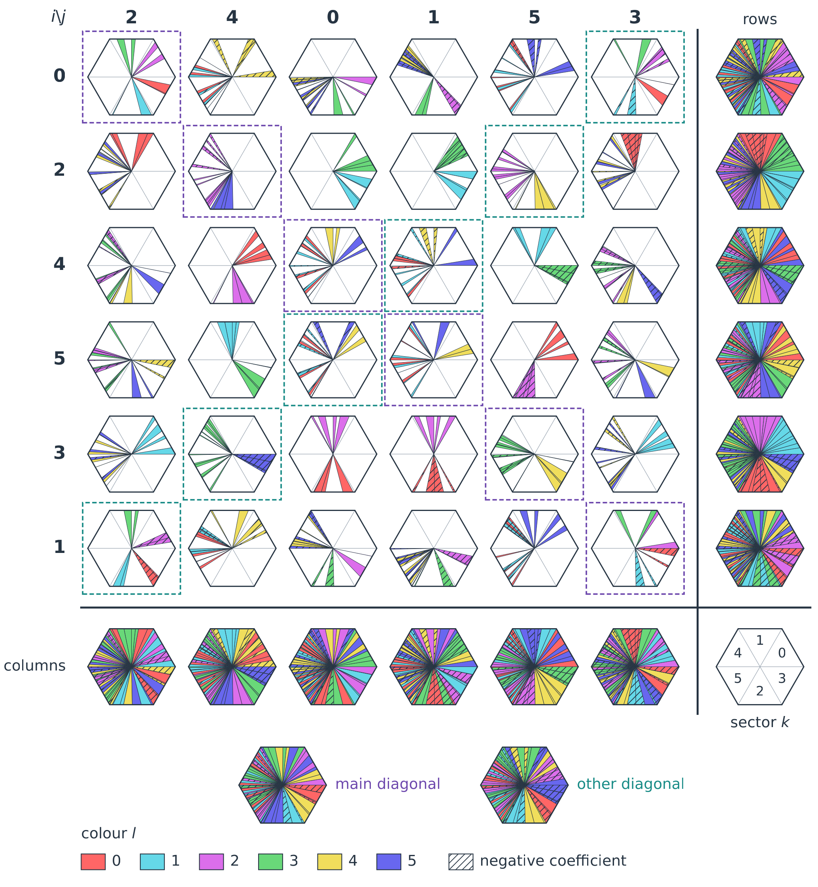

to be published soon...
Use the central 6 × 6 array in the figure below. Each cell gives one row of a 36 × 36 matrix Ug. Read i and j from the printed row and column labels, not their positions. All indices start at 0.
In cell (i, j), identify sector k and colour l using the legends. Add the areas of all fragments with this sector and colour, then divide by the area of one whole sector, which is one sixth of the hexagon. Call the result A. Use area or fractional edge length, not angular width.
Set Ug[6i + j, 6k + l] = A-1/2 for unhatched fragments and -A-1/2 for hatched fragments. All fragments belonging to the same entry have the same hatching. If this cell and sector contain no fragment of colour l then the entry is zero. Sum the areas before taking the square root.
For example, the two hatched yellow fragments with (i, j, k, l) = (0, 4, 0, 4) have areas 337/2000 and 163/2000 in sector units. Their sum is 1/4, so Ug[4, 4] = -1/2.
Repeat this procedure for every cell, sector and colour.

This recovers the geometric representative Ug. Recover the original sparse matrix by U = (O_A ⊗ O_B)T Ug (O_C ⊗ I_6), using the local matrices defined in the paper (to be published soon). Divide matrix entries by 6 only when converting them to normalized state amplitudes.
update: 2026-10-06